+60 receitas de saladas deliciosas e saudáveis.
Descobre como preparar saladas tão saborosas e rápidas que nem parecem “comida de dieta”.
Conserva as saladas até 7 dias sem murcharem.
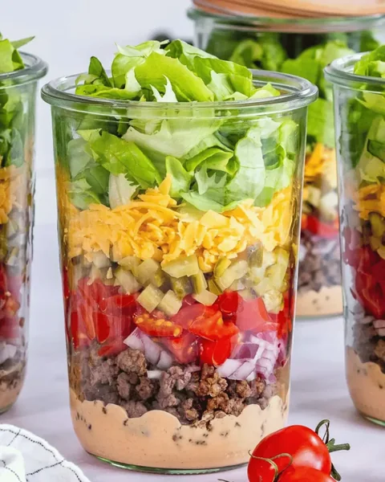
Prepara saladas nutritivas, saudáveis e cheias de sabor, que ajudam a emagrecer, para toda a semana em apenas 20 minutos.
Molhos irresistíveis para variar o sabor.
Saladas da semana prontas em 20 minutos.
Prepara com qualquer frasco que já tenhas em casa.
A ordem das camadas para manter a frescura por até 7 dias, conforme a receita.
Como conservar e guardar cada salada.
Passo a passo de preparação e montagem.
Algumas saladas
que vais aprender:
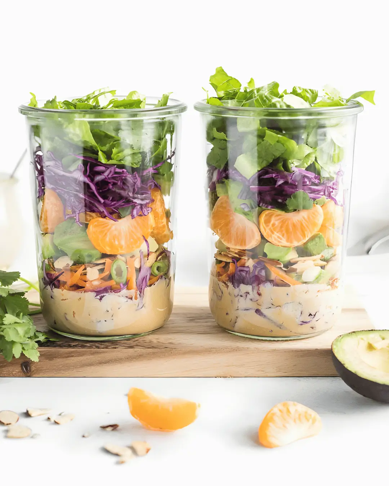
Salada Refrescante
+ molho cítrico
3–4 diasno frigorífico100 kcalvalor de referência
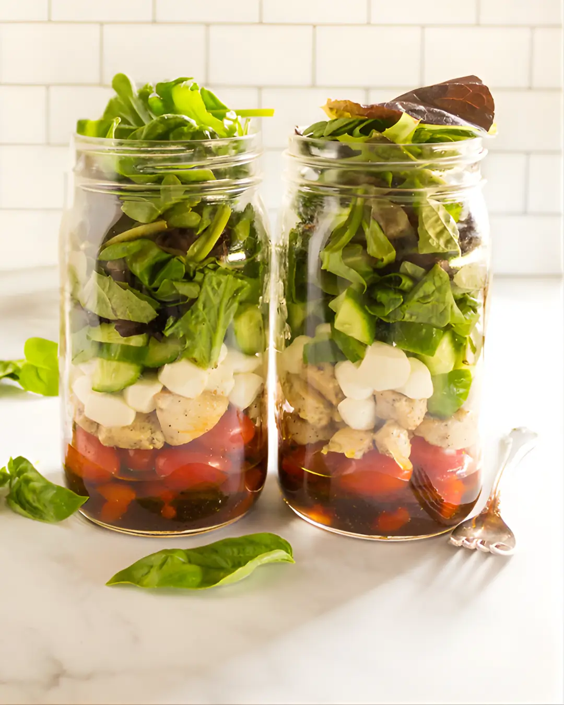
Salada Caprese
Tomate, queijo e frescura
3–4 diasno frigorífico120 kcalvalor de referência
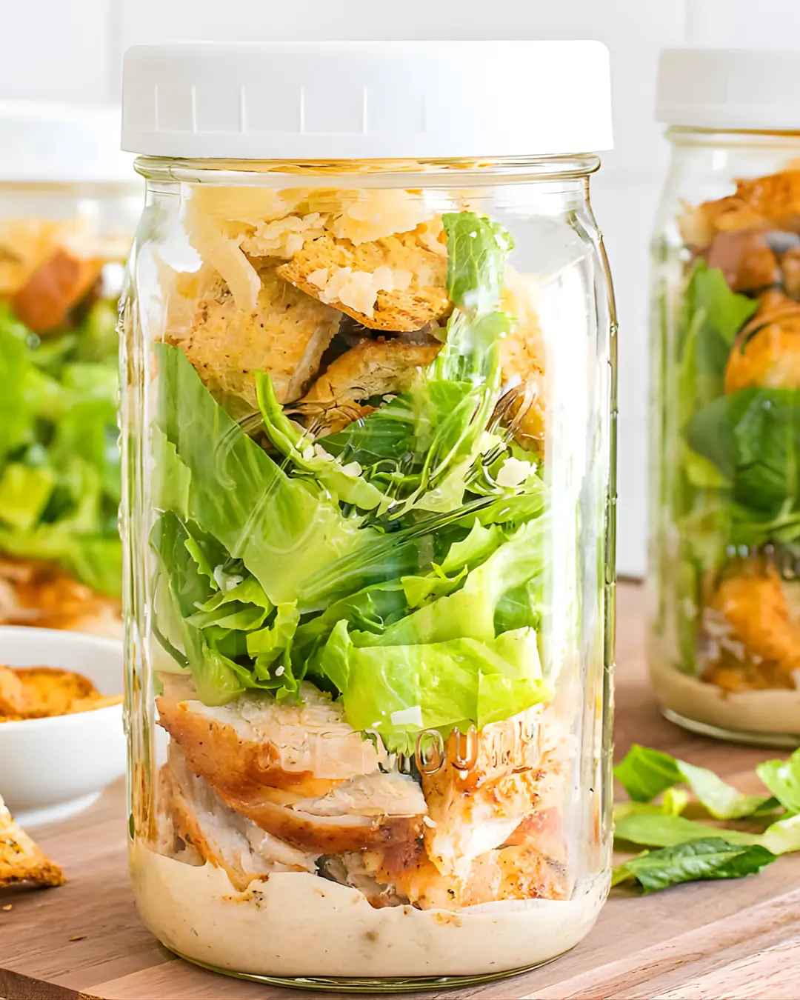
Salada Caesar
+ molho original
3–4 diasno frigorífico115 kcalvalor de referência
Salada Big Mac
+ molho especial
3–4 diasno frigorífico180 kcalvalor de referência
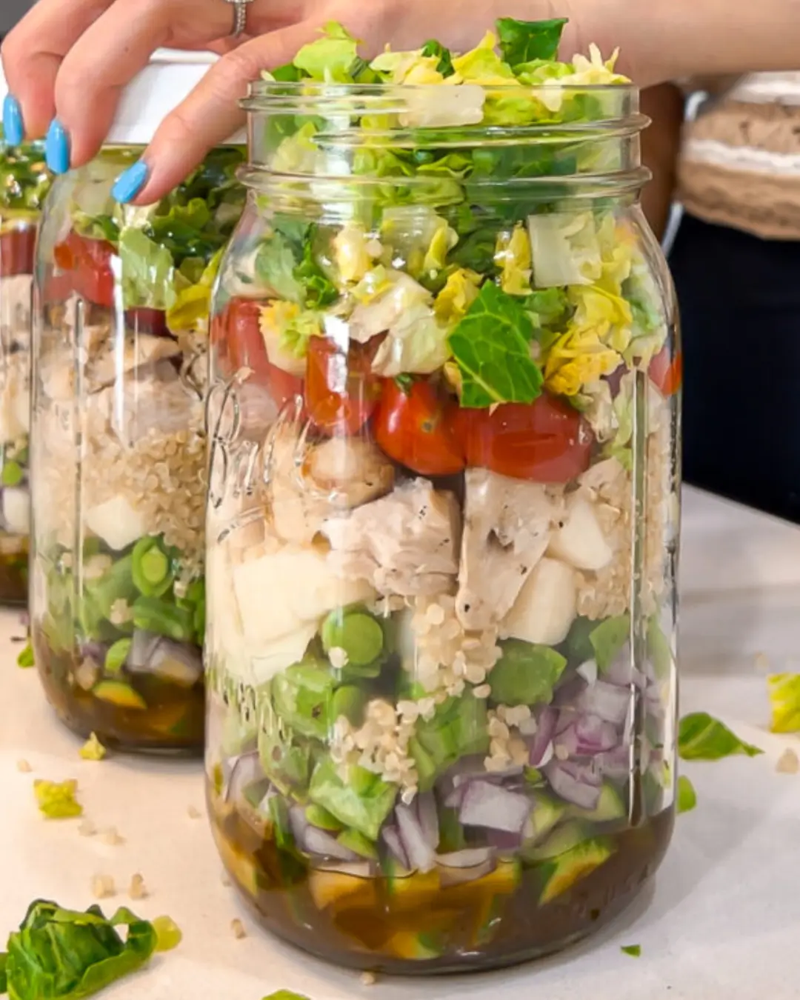
Salada Mediterrânea
+ molho agridoce
3–4 diasno frigorífico120 kcalvalor de referência
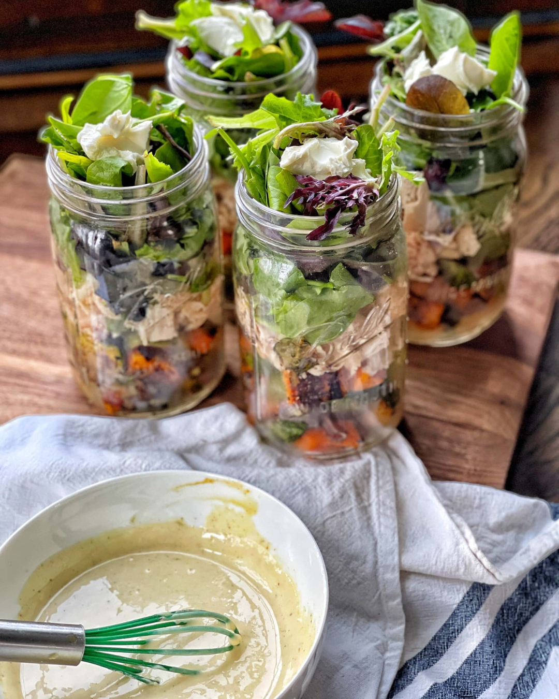
Salada Rústica
+ mostarda e mel
3–4 diasno frigorífico160 kcalvalor de referência
Saladas para
diferentes objetivos.
- Leves
- Proteicas
- Equilibradas
- Irresistíveis
- Rápidas
- Mediterrânicas
- Picantes
- +20 estilos
Prepara molhos
irresistíveis e saudáveis.
Verde de ervas
≈ 20 kcalestimativa / 30 gIogurte, ervas e um toque de limão.
Cremoso de limão
≈ 40 kcalestimativa / 30 gTextura cremosa com um toque cítrico.
Rosé leve
≈ 30 kcalestimativa / 30 gTomate e iogurte numa combinação cremosa.
VÊ a prévia da aula 1:
O MÉTODO POR DENTRO
Camadas saborosas
e saudáveis
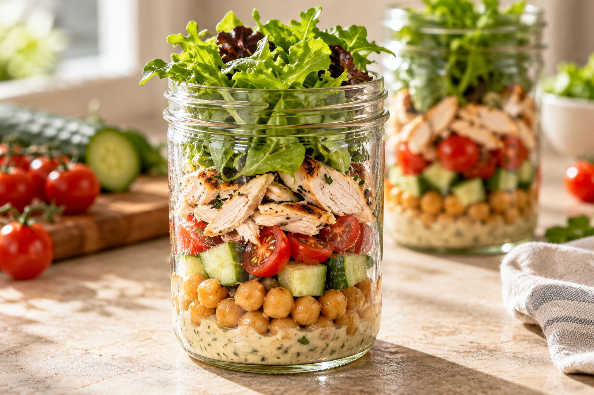
01 / CONSERVAÇÃOMais frescura.
Molho no fundo, folhas por cima.
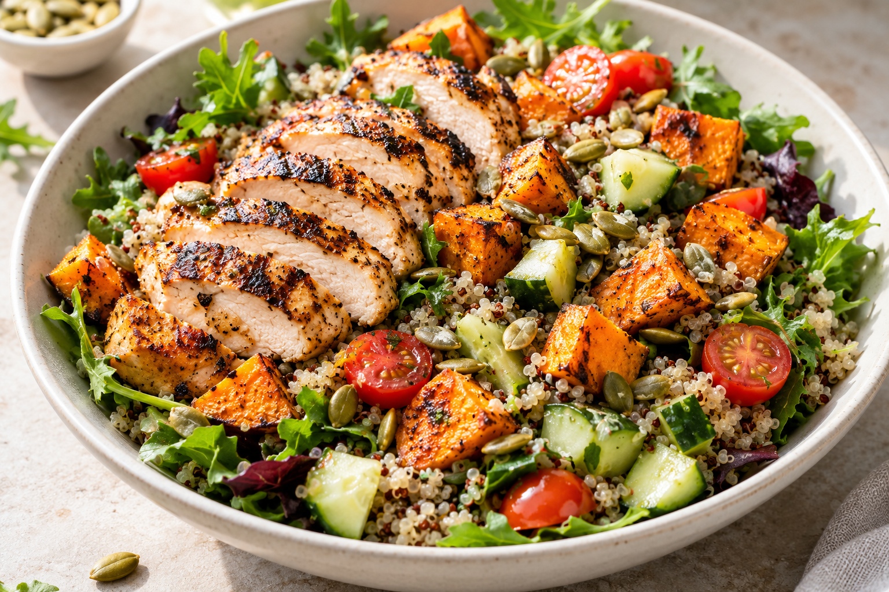
02 / REFEIÇÃO COMPLETASubstitui qualquer refeição
Vegetais, proteína e muito sabor.
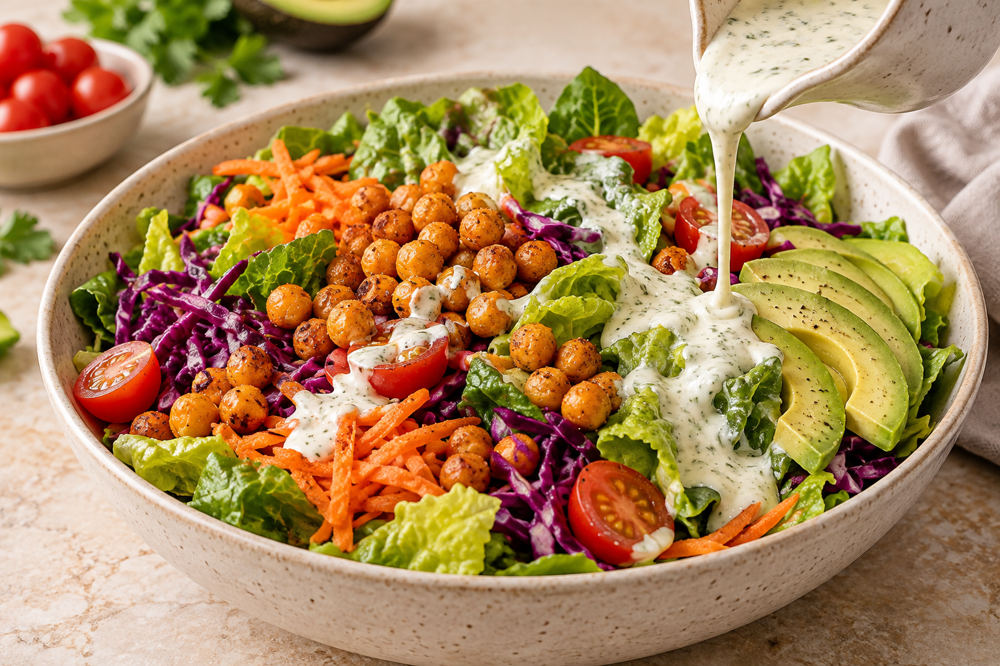
03 / MOLHOSO sabor que muda tudo.
Molhos caseiros e saudáveis.
Deixa as saladas da semana prontas em menos de 20 minutos.E descobre como conservá-las sem murcharem.
RECEBE AINDA
+ 3 bónus exclusivos:
Mais sabor e variedade para a tua semana.
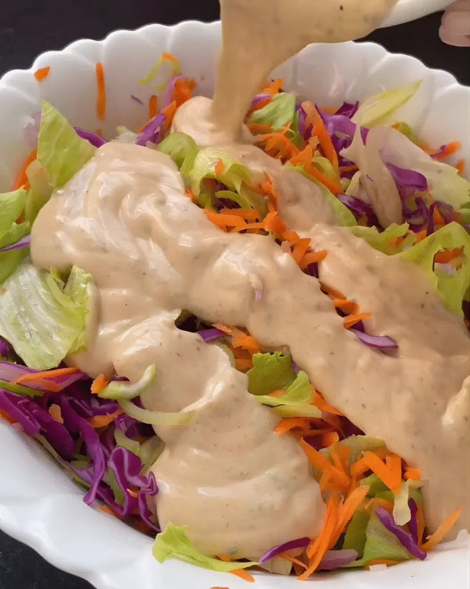
BÓNUS 01Molhos
Molhos
saudáveis.
Textura cremosa e sabor, com porções definidas.
Incluído no plano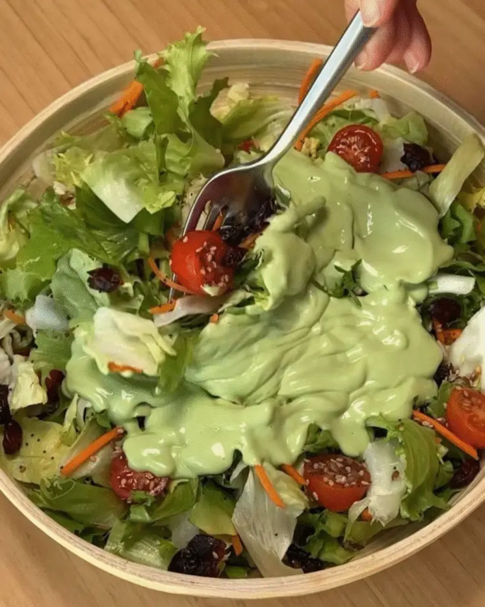
BÓNUS 02Saladas leves
Saladas leves
Turbo.
Mais vegetais e volume para opções leves.
Incluído no planoBÓNUS 03Saladas
Saladas
proteicas.
Mais fontes de proteína nas tuas combinações.
Incluído no planoIsto acontece
contigo?
Quero comer de forma saudável, mas não quero saladas sem graça nem “comida de dieta”.
Com a pressa do dia a dia, a salada fica sempre para depois.
Alface e tomate já perderam a graça.
Queres comer melhor, mas precisas de uma solução prática.
Então a salada no frasco
é para ti.
Tudo para transformar saladas comuns em refeições deliciosas.
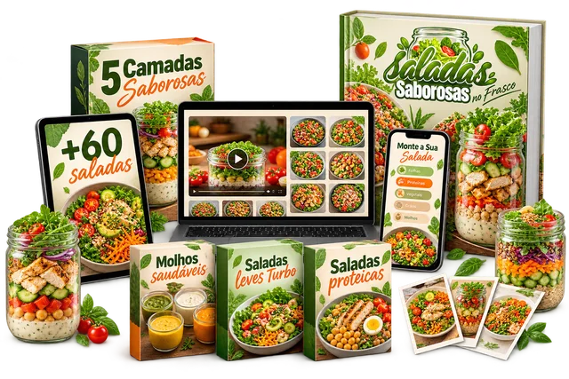
Representação dos conteúdos digitais. Sem envio de materiais físicos.
PLANO COMPLETOMais possibilidades.
Mais possibilidades.
Mais sabor.
Tudo o que vais receber
- 60 receitas de saladas saborosas
- Método das 5 Camadas Saborosas™
- Aula de montagem, preparação e conservação
- Molhos saudáveis e irresistíveis
- Saladas leves Turbo
- Saladas proteicas
Super bónus grátis
App com todas as receitas organizadas e muito mais.
- Filtro por ingredientesEncontra receitas com os alimentos que tens em casa.
- Lista de comprasOrganiza o que precisas para preparar as tuas saladas.
- Tutoriais de preparaçãoSegue cada passo para preparar e montar as saladas.
- Tipos de saladasEscolhe as combinações de que mais gostas.
- Organizador semanalPlaneia as receitas da semana num só lugar.
- Molhos caseirosEncontra o molho ideal para variar o sabor.
PAGAMENTO ÚNICO
Quero o plano completo
€14,90
Sem mensalidade.
14 dias para experimentar.Se não gostares, pede o reembolso de 100% do valor.